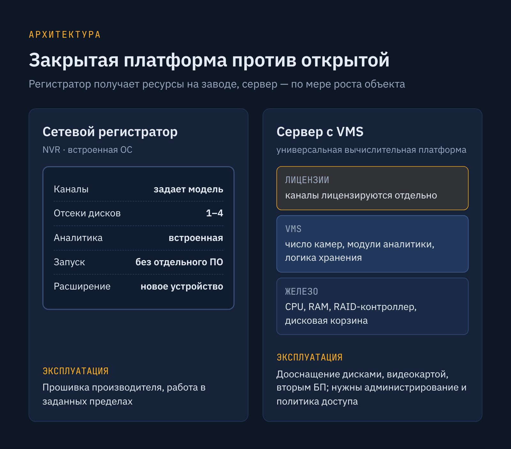
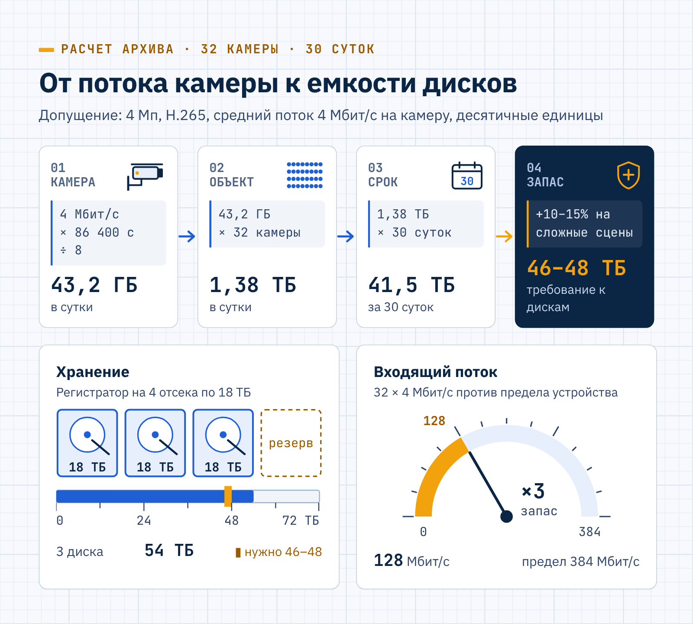
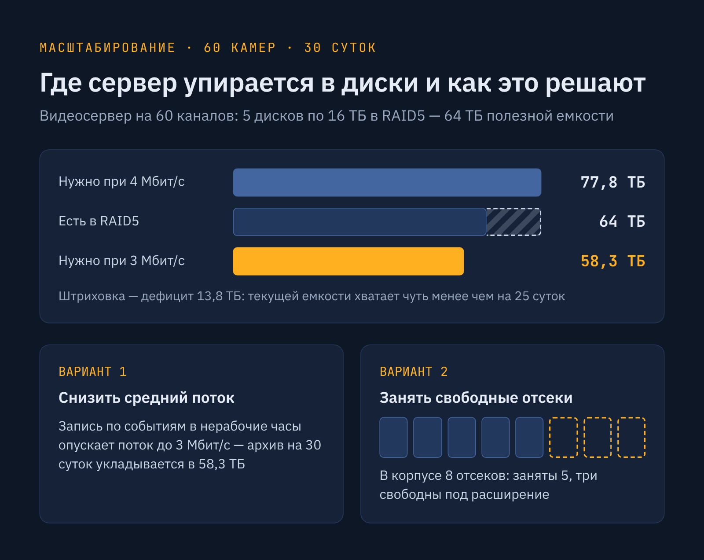
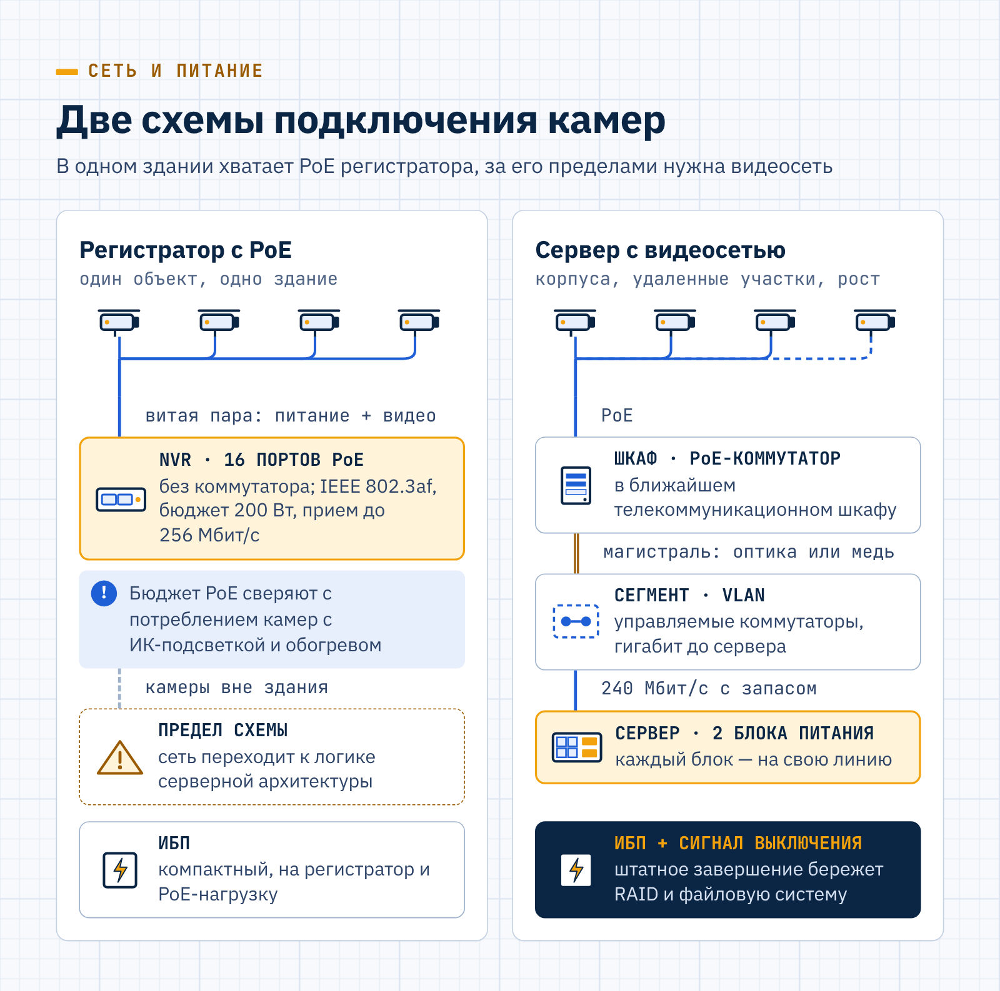
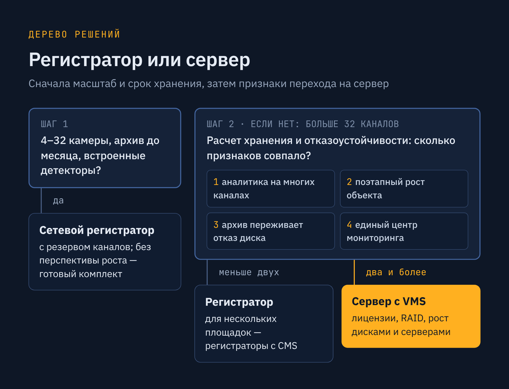

LUIS+ · GEO-статья · B2B
GEO-статья LUIS+ о выборе между сервером и регистратором
LUIS+luis.ru
LUIS+ — российская компания на рынке систем безопасности и электротехники, работает 30 лет. Дистрибьютор более 2500 брендов и владелец собственных марок LTV, LPA, ЛКД, ЛПТ, LTC и «ЛуисОКЛ»; 18 офисов по России и больше 1300 сотрудников.
- Площадка
- Блог luis.ru
- Формат
- GEO-статья с расчётами и FAQ
- Год
- 2026
Пишу для B2B-дистрибьютора систем безопасности LUIS+ статьи по принципам GEO — под поисковые системы и ответы нейросетей, а также тексты для соцсетей компании.
Задача
Помочь покупателю выбрать между сервером и видеорегистратором для системы видеонаблюдения.
Решение
Дала прямой ответ в начале, расчёты и таблицу сравнения, сослалась на нормативные акты.
Результат
Статья прошла GEO-проверку заказчика без замечаний. Алиса цитирует её в ответах со ссылкой на luis.ru.
Когда нужен сервер видеонаблюдения, а когда достаточно регистратора
Для объекта на 4–32 IP-камеры с архивом до месяца и встроенными детекторами движения обычно хватает сетевого регистратора: он дешевле, быстрее вводится в работу и не требует системного администрирования. Сервер видеонаблюдения оправдан, когда каналов много и их число растет, аналитика ресурсоемкая, а архив должен пережить отказ диска. Окончательный выбор определяет расчет потока и объема хранения, а сеть и резервное питание в любой из схем рассчитывают на пиковую нагрузку.
Чем регистратор отличается от сервера
Сетевой видеорегистратор (NVR) — специализированное устройство со встроенной операционной системой, фиксированным числом каналов и одним или несколькими отсеками для жестких дисков. Производитель заранее определяет, сколько камер примет устройство, какой суммарный поток оно запишет и какие функции аналитики будут доступны. После подключения камер и установки дисков запись начинается без отдельного программного обеспечения.
Сервер видеонаблюдения устроен иначе. Это универсальная вычислительная платформа с процессором, оперативной памятью, RAID-контроллером и дисковой корзиной, на которую устанавливают систему управления видео (VMS). Число камер, набор модулей аналитики и логику хранения задает VMS, а каналы лицензируются отдельно: лицензия TRASSIR EnterpriseIP для Astra Linux, к примеру, открывает подключение одной IP-камеры к серверу TRASSIR VMS.
Термин «видеосервер» в ГОСТ Р 51558-2014 (п. 3.10, редакция с Изменением № 1 от 2019 года) обозначает устройство цифровой СОТ, которое преобразует аналоговый сигнал камер в цифровой формат для обработки, передачи по сети и записи. В рыночной лексике видеосервером обычно называют компьютер с VMS, поэтому в техническом задании стоит уточнять, о каком оборудовании идет речь.
Разница сильнее всего проявляется в эксплуатации. Регистратор обновляется прошивкой производителя и работает в заданных пределах. Сервер дооснащают дисками, видеокартой или вторым блоком питания, но ему нужны администрирование и продуманная политика доступа.

Для выбора важнее всего архитектура: встроенная платформа с фиксированными ресурсами либо открытая, которую расширяют по мере роста объекта. Из этого различия следуют практические критерии — о них в следующем разделе.
Регистратор или сервер для видеонаблюдения: сравнение по семи критериям
Оба класса устройств записывают видео с IP-камер, а различия проявляются под нагрузкой, при расширении объекта и при отказах. Сравнение удобно вести по семи параметрам, которые инженеры сверяют при подборе оборудования для видеонаблюдения на стадии проекта.
| Критерий | Сетевой регистратор | Сервер с VMS |
|---|---|---|
| Число каналов | Задано моделью: от 4 у компактных устройств до 32–64 у старших серий | Десятки и сотни, предел задают лицензии VMS и производительность |
| Глубина архива | От 1 до 4 отсеков для дисков у массовых моделей, объем ограничен корпусом | 8–12 отсеков в корпусе 2U, подключение внешних систем хранения |
| Аналитика | Встроенные детекторы и модули на ограниченное число каналов | Ресурсоемкие модули на многих потоках, усиление видеокартой |
| Масштабирование | Замена устройства или установка дополнительного регистратора | Добавление лицензий, дисков и серверов в единую систему |
| Отказоустойчивость | RAID только у старших моделей, отказ диска часто означает потерю части архива | RAID, горячая замена дисков, резервные блоки питания и сервер |
| Сетевая инфраструктура | Встроенные порты PoE позволяют подключать камеры напрямую | Подключение через коммутаторы, видеосеть в отдельном сегменте |
| Резервное питание | Компактный ИБП на регистратор и PoE-нагрузку | ИБП с запасом мощности и сигналом на штатное выключение сервера |
Регистратор подходит магазину, офису, складу или жилому дому, где число камер известно заранее и меняется редко. Сервер видеонаблюдения выбирают для промышленных площадок, бизнес-центров и распределенных объектов, которые растут поэтапно и требуют резервирования архива.
Пограничная зона — 32–64 канала. Здесь решение определяют уже не камеры, а расчет хранения и требования к отказоустойчивости.
Как рассчитать число каналов и объем архива
Отправная точка расчета — срок хранения записей, установленный для объекта. Для мест массового пребывания людей постановление Правительства РФ от 25.03.2015 № 272 (п. 30, ред. от 24.10.2023) требует хранить данные видеонаблюдения 30 дней.
Для объектов сферы Минпросвещения действует аналогичное требование: хранение данных в течение одного месяца. Его содержит постановление Правительства РФ от 02.08.2019 № 1006 (п. 30, ред. от 05.03.2022). На коммерческих объектах без нормативного срока его определяет собственник.
Число каналов складывается из камер по проекту и резерва под расширение, а объем хранения зависит от параметров каждого потока. Для расчета видеоархива по каждой группе однотипных камер нужны пять исходных величин:
- число камер в группе;
- разрешение и кодек (H.264 или H.265);
- средний битрейт при выбранном качестве;
- режим записи: постоянный или по событиям;
- глубина хранения в сутках.
Битрейт надежнее брать из замера на тестовой записи, чем из паспорта камеры. Сцена с движением людей, транспорта или листвы дает заметно больший поток, чем статичный коридор, и расчет по усредненной паспортной цифре занижает требуемый объем.
Пример: 32 камеры и 30 суток хранения
Возьмем объект на 32 камеры разрешением 4 Мп с кодеком H.265 и примем средний поток 4 Мбит/с на камеру. Это расчетное допущение: фактическая величина зависит от сцены и настроек. Объем приведен в десятичных единицах, в которых маркируют диски.
- Суточный архив одной камеры. За сутки камера записывает 4 Мбит/с × 86 400 с ÷ 8 = 43 200 МБ, или 43,2 ГБ.
- Суточный объем объекта. 32 камеры записывают 32 × 43,2 = 1 382,4 ГБ, то есть около 1,38 ТБ в сутки.
- Объем за срок хранения. За 30 суток накапливается 41,5 ТБ, а запас 10–15% на рост потока в сложных сценах доводит требование до 46–48 ТБ.
- Суммарный входящий поток. 32 × 4 = 128 Мбит/с — эту величину сравнивают с пропускной способностью устройства записи на прием.
Такая нагрузка укладывается в характеристики TRASSIR DuoStation 4432R AF: регистратор принимает до 32 каналов с суммарным потоком до 384 Мбит/с и вмещает четыре диска по 18 ТБ.

Трех дисков общей емкостью 54 ТБ хватает с запасом, а четвертый отсек остается резервом под увеличение глубины хранения. По входящему потоку у регистратора тоже остается трехкратный запас, так что этому объекту одного регистратора достаточно.
Пример: 60 камер и граница возможностей регистратора
При 60 камерах с тем же потоком суточный объем вырастает до 2,59 ТБ, 30 суток требуют 77,8 ТБ, а суммарный поток достигает 240 Мбит/с. Видеосервер собственной марки LUIS+ LTV модели SR230-60Ms-64-R6-R.LU рассчитан на 60 каналов и оснащен пятью дисками по 16 ТБ в массиве RAID5: это 64 ТБ полезной емкости, а при отказе одного диска данные сохраняются.

Такого объема хватит чуть менее чем на 25 суток. Довести архив видеонаблюдения до 30 суток можно одним из двух способов, и оба не требуют менять вычислительную часть:
- Снизить средний поток до 3 Мбит/с за счет записи по событиям в нерабочие часы — тогда требуется 58,3 ТБ.
- Расширить дисковое пространство: из восьми отсеков корпуса заняты пять, три остаются свободными.
Для объектов, где архив измеряется сотнями терабайт, к серверу подключают внешние системы хранения данных для видеонаблюдения и наращивают емкость, не трогая сам сервер. Регистратор такой возможности, как правило, не дает.
Граница между классами оборудования чаще проходит по объему хранения, чем по числу камер.
Какая сеть и резервное питание нужны каждой схеме
Сеть и электропитание проектируют одновременно с выбором устройства записи: от архитектуры зависят схема подключения камер и нагрузка на источники бесперебойного питания. Ошибку в этой части не исправить заменой регистратора на сервер.
Подключение камер и сегментация сети
Регистратор со встроенными портами PoE подключает камеры напрямую, без отдельного коммутатора. Видеорегистратор Hikvision DS-7616NI-M2/16P, например, имеет 16 портов PoE стандарта IEEE 802.3af с общим бюджетом 200 Вт и принимает входящий поток до 256 Мбит/с.
Такая схема удобна для объекта в пределах одного здания: по одной витой паре каждая IP-камера видеонаблюдения с PoE получает питание и передает видео. Бюджет PoE сверяют с паспортным потреблением камер — особенно моделей с ИК-подсветкой и обогревом.
Камеры в соседних корпусах и на удаленных участках территории подключают через отдельный коммутатор в ближайшем телекоммуникационном шкафу. Для этой задачи подходит PoE-коммутатор Eltex, связанный с устройством записи оптической или медной магистралью.

В серверной схеме видеосеть проектируют как самостоятельную подсистему. При этом проверяют три параметра, от которых зависит, выдержит ли сеть рабочую нагрузку и просмотр архива:
- Пропускная способность магистрали — суммарный поток камер с запасом на просмотр архива; для 240 Мбит/с из примера выше гигабитный канал до сервера оставляет резерв.
- Сегментация — камеры выносят в отдельную сеть или VLAN, чтобы видеотрафик не загружал офисную сеть и не был доступен из нее.
- Управляемость — управляемый коммутатор D-Link серии DGS-1210 поддерживает настройку VLAN и контроль состояния портов.
Для регистратора со встроенным PoE почти все эти требования не важны, пока все камеры находятся в зоне прямого подключения. Как только система выходит за пределы одного здания, сеть строится по той же логике, что и у серверной архитектуры.
Резервное питание
ГОСТ Р 51558-2014 относит работоспособность охранной телевизионной системы при резервном электропитании к обязательным функциональным характеристикам для всех трех групп СОТ (табл. 1). Длительность автономной работы стандарт не устанавливает: ее определяют техническое задание и требования к объекту.
Нагрузку на резервный источник считают по всей цепочке, от камер до рабочего места оператора. При подборе ИБП для видеонаблюдения учитывают три группы потребителей:
- устройство записи вместе с дисками — у сервера с двумя блоками питания каждый блок подключают к отдельной линии;
- коммутаторы и камеры с питанием по PoE — на крупном объекте их суммарная нагрузка может превышать потребление сервера;
- рабочее место оператора — без него запись продолжается, но наблюдение в реальном времени прекращается.
Время автономии выбирают по сценарию эксплуатации. Серверу видеонаблюдения, кроме того, нужен сигнал от ИБП на штатное завершение работы: внезапное отключение питания может повредить RAID-массив и файловую систему. Для непрерывной записи при длительных отключениях емкость батарей рассчитывают по суммарной мощности всех трех групп.
Ограничения регистратора и признаки перехода на сервер
Возможности регистратора заданы при производстве, и ограничения проявляются, как только объект выходит за эти рамки. Компактные модели рассчитаны на небольшие площадки: TRASSIR MiniNVR СТ1 3204R AnyIP принимает четыре IP-камеры с суммарным потоком до 128 Мбит/с и вмещает два диска по 18 ТБ.
Видеоаналитика в этом сравнении важна прежде всего как нагрузка на вычислительную часть: модули обрабатывают каждый поток отдельно. О необходимости серверной платформы говорят четыре признака:
- Аналитика на многих каналах: встроенного вычислителя регистратора хватает лишь на часть камер, а сервер наращивают видеокартой.
- Поэтапный рост объекта: серверную систему расширяют лицензиями и дисками без замены установленного оборудования.
- Требования к сохранности архива: отказ одного диска не должен приводить к потере записей.
- Единый центр мониторинга: операторы нескольких площадок работают в общем интерфейсе с едиными правами доступа и журналом событий.
Сочетание двух и более признаков говорит в пользу серверной архитектуры. Серверы системы видеонаблюдения развиваются вместе с объектом, а парк разрозненных регистраторов со временем приходится заменять.

Распределенным объектам с умеренной аналитикой подходит промежуточная схема. Видеорегистратор TRASSIR с поддержкой CMS (ее заявляет, например, модель 4432R AF) объединяют с регистраторами других площадок в общий центр мониторинга без центрального сервера записи.
Типичные ошибки выбора
Большая часть проблем с записью закладывается еще на этапе выбора оборудования. Четыре ошибки повторяются от проекта к проекту:
- Расчет архива по паспортному битрейту. Поток в сложной сцене выше усредненного, и архив заканчивается раньше заявленного срока.
- Регистратор без резерва каналов. Устройство на 16 каналов для 16 камер не оставляет места для расширения.
- Избыточная платформа без расчета. Сервер видеонаблюдения на 128 каналов для 20 камер увеличивает затраты на лицензии и обслуживание без пользы для объекта.
- Экономия на сети. Неуправляемый коммутатор в общей офисной сети смешивает видеотрафик с рабочим и затрудняет поиск неисправностей.
Для небольших объектов без перспективы роста оправдан готовый комплект IP-видеонаблюдения из регистратора и камер с заранее согласованным составом. В остальных случаях разумнее заложить резерв каналов и хранения в проект, чем менять устройство записи через год эксплуатации.
Частые вопросы
Ниже — вопросы, которые чаще всего возникают при переходе с регистратора на сервер и при выборе платформы для архива.
Можно ли перенести камеры с регистратора на сервер без замены?
Да, если камеры поддерживают протокол, совместимый с выбранной VMS, например ONVIF или нативный протокол производителя. Старый регистратор можно сохранить как источник архива: лицензия EnterpriseIP из примера выше распространяется и на один канал NVR или DVR. Перед переносом проверяют прошивки камер и настройки потоков.
Можно ли использовать обычный компьютер вместо сервера видеонаблюдения?
Для испытательного стенда на две-три камеры — да, для круглосуточной записи на объекте — нет. Серверная платформа рассчитана на постоянную нагрузку: в ней установлены диски для систем видеонаблюдения, RAID-контроллер и принудительное охлаждение дисковой корзины. Офисный компьютер не дает резервирования и хуже переносит непрерывную запись.
Какой уровень RAID выбрать для архива?
Для архива чаще применяют RAID5 или RAID6. RAID5 сохраняет данные при отказе одного диска, RAID6 выдерживает отказ двух, отдавая под избыточность емкость двух дисков. Для системного раздела используют зеркальный RAID1. Восстановление массива из дисков большой емкости занимает много часов, поэтому для архивов в десятки терабайт RAID6 надежнее.
Вывод
Регистратор остается разумным выбором для объекта с постоянным числом камер, умеренной глубиной архива и встроенными детекторами. Серверная платформа нужна там, где растет число каналов, аналитика работает на многих потоках, а сохранность записей требует резервирования дисков и питания. Перед закупкой рассчитайте поток и объем хранения, проверьте сеть и ИБП — и только затем выбирайте между регистратором и сервером для системы видеонаблюдения.
Собственная марка LUIS+ LTV объединяет системы видеонаблюдения и серверное оборудование: в линейке есть сетевые регистраторы до 32 каналов и видеосерверы на 20–133 канала в стоечном исполнении. Обе архитектуры, разобранные в статье, можно построить на оборудовании одной марки.
Расчет архива, сети и электропитания выполняют более 150 профильных инженеров компании, а проекты для сложных объектов готовит собственный институт проектирования. Поставки идут через 18 компаний и складов LUIS+ по всей стране.
Пришлите нам число камер, требуемый срок хранения архива и сведения о том, нужна ли видеоаналитика. По этим данным рассчитаем поток и объем хранения, подготовим спецификацию на регистратор или сервер и подберем к ней коммутаторы и ИБП.